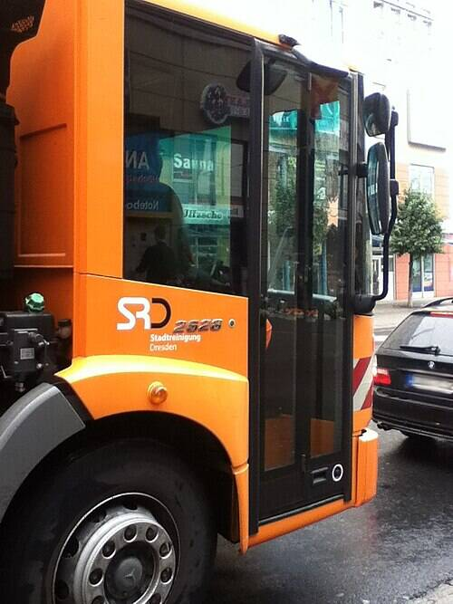

From garbage route to repair list.
The trucks drive every street anyway. We add a camera box, and the city gets a map of every crack and pothole each week.

The camera box
Dashcam sized
Mounted behind the windscreen. The driver does nothing.
Runs on the truck
Powered by the truck. We install and maintain it.
Thinks on board
The AI runs inside the box. Only photos of damage are uploaded.
Private by design
Faces and number plates are blurred before anything leaves the truck.
What the city sees every week
One truck route through the Äußere Neustadt, worst damage first. Pick an entry to find it on the map.
Sample data on real streets. Map data © OpenStreetMap contributors.
What it finds
Each find gets a type, a box and an urgency rank, so crews know where to go first.
 Long crack 0.90
Long crack 0.90 Crack 0.91
Crack 0.91 Crack network 0.88
Crack network 0.88 Edge break 0.86
Edge break 0.86 Pothole 0.95
Pothole 0.95 Pothole 0.98
Pothole 0.98
The waste company drives. We pay them for it.
The fleet partner carries the camera and pays nothing. In return they get:
€300 per truck a year
For doing what they already do.
A free dashcam
Footage for accidents and insurance disputes.
Bin and dumping alerts
The same camera spots overflowing bins and illegal dumping.
Zero effort
We install, maintain and handle data protection.